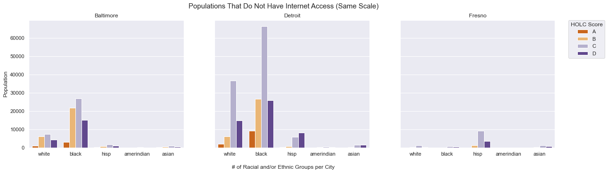
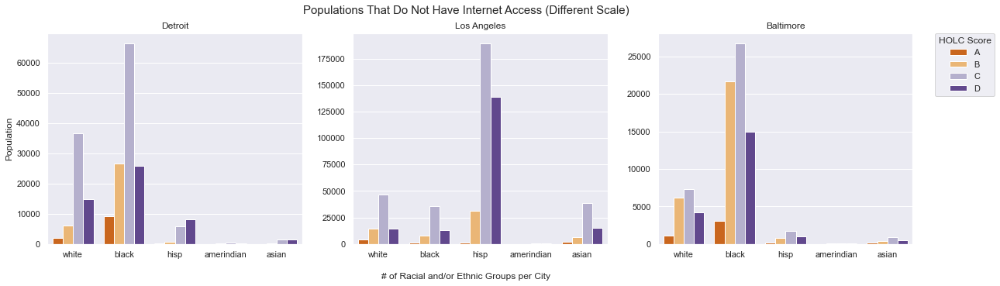
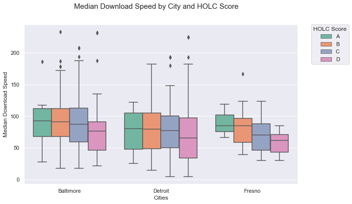

The research regarding equality of internet access has been split into two separate, but related, concepts: the American digital divide, and digital redlining. The American digital divide primarily pertains to the inequalities present between groups of people in terms of access to the internet, and knowledge and skill needed to interact with the internet 1. Although research shows that the digital divide has reduced considerably as more Americans develop digital literacy skills, there are still considerable gaps when grouping based on demographic characteristics 2.
Digital redlining, on the other hand, “...[I]s the creation and maintenance of technology practices that further entrench discriminatory practices against already marginalized groups” 3. The nuance is quite specific- this isn’t simply about the difference between accessing and knowing how to access the internet, but an exploration of the systemic inequalities that are baked into internet access that, then, result in dissimilar levels of access based on race. Digital redlining is the maintenance and expansion of the American digital divide, as well as the admission that the internet is systemic in its inequality of access in America 4.
This practice is predominately apparent within the context of the inner city neighborhood although the way it actualizes differs from city to city. It could either be through ISPs not offering high speed internet packages to areas with high poverty rates like in Cleveland and Dallas. Or it could be by the uneven level of distribution where ISPs are disproportionately focusing on providing services in high income, predominately white, neighborhoods. This latter form of digital redlining has been found in Baltimore, Cleveland , Detroit, Los Angeles, Fresno, Oakland, and Dallas to name a few.
Although the geographic impacts of “classic redlining” (withhold mortgage credit) has been explored through a variety of lens, this research question has not been applied to digital redlining.That is to say, how did the Home Owners’ Loan Corporation (HOLC) neighborhood rating map impact both the accessibility of and the quality of internet service?
In order to explore this question we will be comparing digital redlining across three different cities: Baltimore, Detroit, and Fresno.There is a fantastic project called Not Even Past: Social Vulnerability and the Legacy of Redlining where researchers from the University of Richmond, mapped out the redlining maps made by the HOLC during the 1930s, onto the present day census tracts. This particular dataset also gives us a percentage as to how much of a present day census tract falls under the HOLC neighborhood map as well. The table below indicates how much, on average, an HOLC neighbor makes up a modern day census track in our three cities.
| HOLC Score | Baltimore | Detroit | Fresno |
|---|---|---|---|
| 0.262763 | 0.246909 | 0.088722 | |
| 0.328538 | 0.276498 | 0.134941 | |
| 0.307629 | 0.286751 | 0.196170 | |
| 0.446228 | 0.277596 | 0.158156 |
In general, about ~20% of a census tract’s residents live in a HOLC rated neighborhood. Our first exploration for this particular question, is going to be about comparing the populations that do not have internet access by racial and/or ethnic groups and the HOLC score.
When we graph this value on the same scale, there are some immediate, and obvious takeaways. Although the three cities are of roughly the same size (500000 – 600000 people), Baltimore and Detroit have far more people living in HOLC rated neighborhoods. Fresno, in comparison and on average, only has 20% of their current residents living in HOLC rated neighborhood. This largely explains why Detroit appears to have a much LARGER of digital redlining in HOLC neighborhoods when compared to Baltimore or even Fresno. But this is not the case as, if we allow for different scales, we can see that this problem is present in all 3 cities.
In Fresno, the issue of digital redlining by way of internet accessibilities for HOLC neighborhood is predominately a Hispanic/Latinx problem. Of the Hispanic/Latinx people who live in a HOLC neighborhood, they largely live in neighborhoods that were labelled as “Declining” (grade C) or redlined (grade D). As we can see in the graph with the same scale, Detroit appears to have the largest population of residents living in HOLC neighborhoods who don’t have internet access. Of the five racial and/or ethnic groups, the Black population appears to be the most affected with the white population trailing second. Once again the neighborhood that appears to be the most impacted are the “Declining” ones. In Baltimore, the HOLC score does not matter as residents living in “Still Desirable” (grade B) neighborhoods are also impacted by lack of internet accessibility.
What these graphs show us is that “classic” redlining does appear to impact digital redlining as well—there is a connection between those who are Black or Hispanic/Latinx and who live in “Declining” or previously redlined neighborhoods; and those that don’t have any internet access.
Digital redlining is not only about internet accessibilities but also about the quality of the internet that is being offered. As we can see in this graph below, there is a negative average trend of Median Download speeds by HOLC scores. Of those living in HOLC neighborhoods, those in Grade D neighborhoods have the worst median download speed.
Taken all together we have three different stories of digital redlining and it’s manifestations. In Baltimore where Black residents seem to be disproportionately affected by internet accessibilities regardless of where they live. In Detroit where not only is the median speed the lowest of the three cities, but also, once again, has the largest number of Black residents without internet access. And lastly in Fresno where the Hispanic/Latinx population is the most gravely affect and have the most dramatic difference of median speeds.
If you want to explore these maps in more detail, I’ve created a digital redlining map below which outputs the HOLC grading on top of modern day census tracts. A codebook for the variables included is provided in the below table.
| Variable | Definition |
|---|---|
| The HOLC score given to the area. | |
| The percentage of white people living in the census tract & HOLC neighborhood (xx.xx%). | |
| The percentage of Black people living in the census tract & HOLC neighborhood (xx.xx%). | |
| The percentage of Hispanic/Latinx people living in the census tract & HOLC neighborhood (xx.xx%). | |
| The percentage of American-Indian people living in the census tract & HOLC neighborhood (xx.xx%). | |
| The percentage of Asian people living in the census tract & HOLC neighborhood (xx.xx%). | |
| The margin of error for no internet accessibility (xx.xx%). | |
| The total number of people living in the census tract. | |
| Ookla Median Download Speed (Mbps). | |
| Ookla Median Upload Speed (Mbps). |